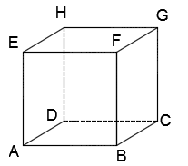
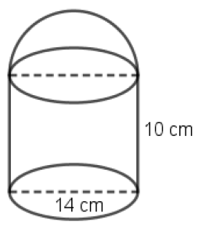
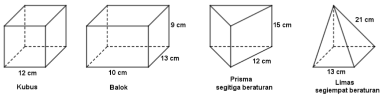
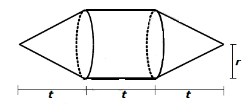
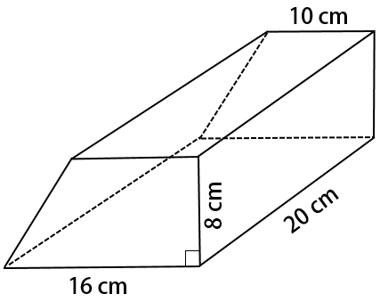
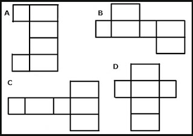
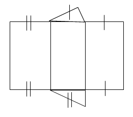

SOAL PILIHAN GANDA

Banyak diagonal ruangnya adalah... .- 2
- 4
- 6
- 8
- 12

Luas seluruh permukaan bangun tersebut adalah...cm2- 605
- 625
- 665
- 807
- 902

Jika kawat yang tersedia 10 meter, sisa panjang kawat adalah... cm.- 415
- 475
- 479
- 484
- 488

Jika t=12cm dan r=5cm,Luas permukaan bangun adalah...cm2- 250π
- 275π
- 300π
- 350π
- 375π

Banyak diagonal ruangnya adalah...cm2.- 176
- 800
- 1.008
- 1.152
- 1.224
- 5
- 6
- 7
- 8
- 9

- A
- B
- C
- D
- A dan B
- 6√2
- 6√3
- 6√5
- 12
- 12√2

- prisma segitiga
- prisma segi empat
- limas segitiga
- limas segi empat
- prisma segi lima